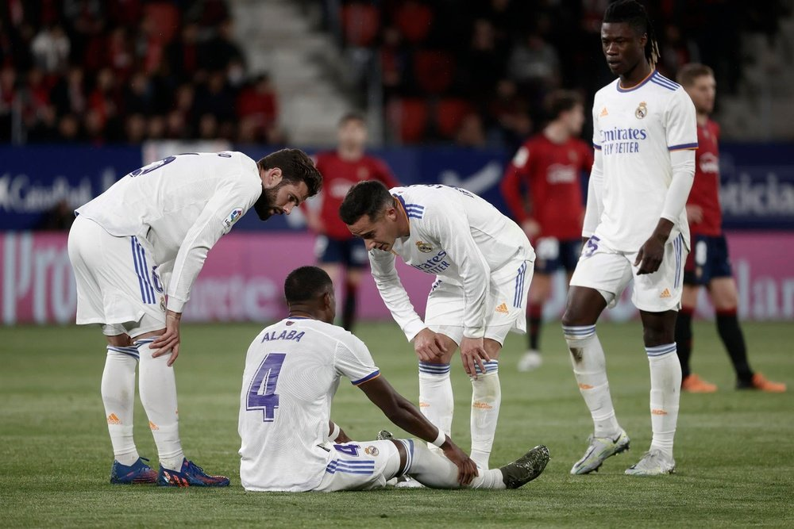

Santander

El Real Madrid se entrenó este sábado con la cabeza puesta en el partido contra el Manchester City del próximo martes. El foco está puesto en los jugadores lesionados, que son varios. Buenas noticias respecto a Casemiro y Ferland Mendy, mientras que Alaba sigue a la espera de conocer el alcance de sus problemas físicos.
Casemiro va poco a poco y este sábado se dejó ver por primera vez en el césped de Valdebebas. El brasileño hizo algo de carrera y también trabajó en el interior de las instalaciones. Todavía es seria duda para la visita al Etihad Stadium y su disponibilidad dependerá de su evolución en los próximos dos días de entrenamiento.
Pierre-Emerick Aubameyang ya es nuevo jugador del Barcelona. El club azulgrana ha hecho oficial la incorporación del delantero, que el lunes se desvinculó del Arsenal. De esta manera, Xavi ya tiene el delantero que había pedido con insistencia al club. El futbolista firma hasta 2025, pero tiene una opción de salida pactada en 2023. Su cláusula, de 100 millones. Minutos antes del anuncio, el Barcelona lo inscribió en LaLiga.